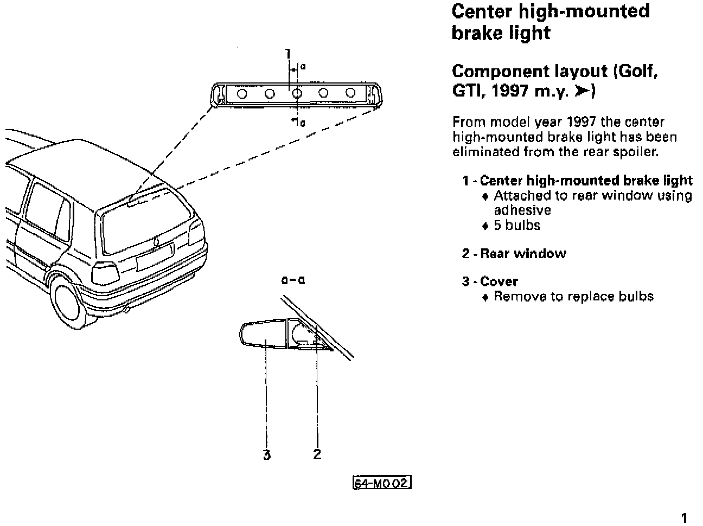

Center High-Mounted Brake Light - Revised
Group: 68Number: 96-02
Date: Sept. 12, 1996
File this Technical Bulletin in Repair Manual No.: W42 011 294 114A
Subject:
Center High-mounted Brake Light, New
Model(s):
Golf, GTI, Jetta 1997 -->
For m.y. 1997, the center high-mounted brake light has been revised. On Golf and GTI models, it has been eliminated from the rear spoiler and is now mounted inside the rear window. The new size light uses 5 bulbs instead of the 14 of the previous version.


These Repair Manual pages are new and will be integrated with the next Repair Manual update.